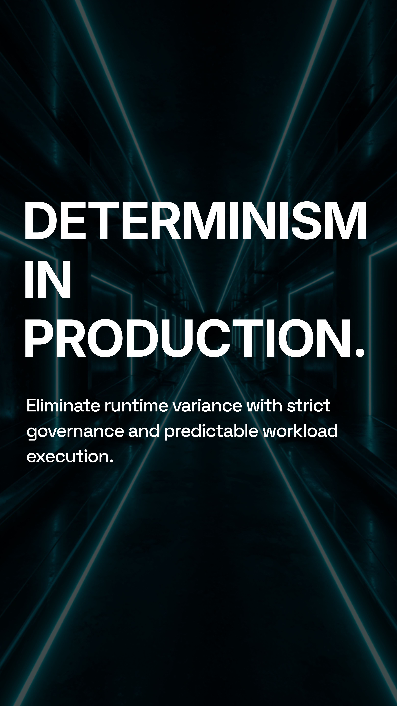
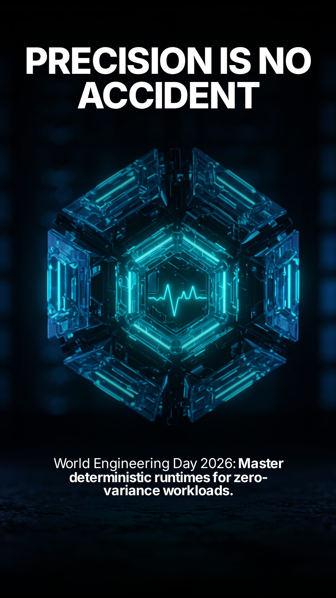

GozoLite is TotyLabs’ experimental execution substrate.
It is a technical foundation for teams that need isolated, deterministic, and governed runtime environments. GozoLite is currently in beta and designed for exploration, integration, and controlled deployment scenarios.

EXECUTION_SUBSTRATE [ISOLATION_BY_DEFAULT]
Polyglot runtime
GozoLite is built to support multiple execution contexts with a consistent and controlled model, reducing runtime variance across environments.
Isolation by default
The execution boundary is treated as a core safety property, enabling safer handling of untrusted or high-risk workloads.
An architecture for controlled execution and future expansion.
Execution governance
The platform is structured around explicit boundaries, verifiable behavior, and operational control.
- Deterministic execution flow
- Controlled runtime composition

GOVERNED_EXECUTION [SAFE_BY_DESIGN]